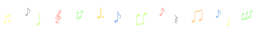

Here you will find Japanese to English translations of songs done by me. I'm in the process of learning Japanese and I like a lot of Japanese songs that aren't particularly popular in English speaking regions so I thought that I'd try my hand at producing some translations. Keep in mind that these might contain errors and possibly be revised after posting, and that they take a rather literal approach as opposed to being singable. If you repost/use any of these translations please link back to this page.
New lyrics are at the top of the page.
七色の光 雨上がりの青空に
ずっとただ見惚れてた
どこへ行けばいいのか分からなくて
君と出逢う あの時までは
The rainbow colored light in the blue sky after it rains
I was always simply enchanted by it
Where shall we go? I don't know where
When I met you, from that time on
じっとしているだけで
精一杯の僕の
手を握り微笑む
「さあ行こう 何も怖くない」
I come to a standstill
With all my strength I clasp your hand and smile,
"Let's go, what is there to fear?"
君が歌うそのメロディ
この心溶かしていくよ
怯える度 何度も
聴かせてくれたんだ
希望満ちて照らす音色
いつか僕も歌いたいな
立ち竦む誰かの 背中を押すように
Your singing, that melody
It continues to melt my heart
When I'm frightened, each time
I listen to it because of you
It's illuminating timbre fills me with hope
Yes, someday I'll sing like that
I'm struck with amazement, it's like my back is being overcome
シャボン玉が舞う
どこまでも飛んでいくよ
いつか形なくなっても
夢に愛を注いで
きっと花は咲くよね そう信じてみるね
Bubbles dance and continue to fly everywhere
Even if someday they'll lose their form
In dreams love is sprinkled
Surely, flowers will bloom won't they? Yes, try to believe that they will
僕は臆病だから
泣いてばっかりだけど
もし君が泣く時
笑っちゃうくらい傍にいてあげる
Even though I'm timid
And always crying, but
If there are times when you find yourself in tears
Don't be shocked, I'll be beside you and raise you up
君が描く虹のアーチ
僕の夢も彩っていくよ
真っ白な世界を 何色に彩っていく
虹の麓辿り着いたら
誰かの夢元気づけるよ
きっとそうやって 世界は咲くんだ
The arch of the rainbow you draw
Continues to color my dreams
What colors will this pure white world continue to be painted?
If I finally arrive at the end of the rainbow
My dreams will be reinvigorated
Yes, surely this world is blooming
止まらない悲しみも
流れ出す涙も
そっと今ここから抱きしめていく
Even in unending sorrow
Or if my tears gush out
I'll softly hold on to you from here on out
君が描くその未来は
僕の夢を輝かせるよ
怯えるたび何度も
聴かせてくれるんだ
君が歩く虹のアーチ
僕の夢を彩っていくよ
きっとそうやって 世界は咲くんだ
The future you envision
Causes my dreams to light up
No matter how many times I'm frightened
I listen to it because of you
The arch of the rainbow you walk along
Continues to color my dreams
Yes, surely this world is blooming
雨がやむ頃に二人で
公園まで歩いて行こう
水たまりを飛び越えて
虹が見えるまでいよう
When the rain stopped
We walked on from the park
Jumping into puddles
Until we can see the rainbow
言えないけど 幸せの鼓動
感じてるよ ちゃんとここに
Even though I can't say it, the pulse of happiness
I can feel it here, steadily
越えても越えても 越えられない壁だって
それでもそれでも 君となら突き抜けられる
明日に届ける この声をどこまででも
遥かに見えてる あの虹へと飛ばすように
Surpass it, surpass it, even though it's an obstacle I can't get over
Even so, even so, if you're with me I can pierce through it
My voice reaches tomorrow, no matter how faraway it is
I can see it faraway, as if it's flying off to that rainbow
夕暮れに吹く風に揺られて
ゆっくり深呼吸して
悩みも不安もすべて
消しちゃうような歌を聴こう
The wind which blows in the evening flows
I take a deep breath leisurely
Troubles, anxiety, anything
It's like an dimmed song can be heard
見えないけど 幸せの色
広がってるよ ちゃんとここに
Even though I can't see it, the color of happiness
It's spreading here, steadily
消しても消しても 消えない傷跡だって
それでもそれでも 君がいれば癒されてく
明日に届ける この声をどこまででも
遥かに見えてる あの夕日に届くように
Diminish, diminish, even though it's a scar which won't go away
Even so, even so, you're here to relieve it
My voice reaches tomorrow, no matter how faraway it is
I can see it faraway, as if it's reaching that evening
出会えた君のそばで
こんなにも近づいた距離を
確かめるように今強く目に焼き付けた
What I encountered at your side
Even when we became close because of it, there was a distance between us
As if to make sure of it, it was etched strongly into my eyes
越えても越えても 越えられない壁だって
それでもそれでも 君となら突き抜けられる
明日に届ける この声をどこまででも
遥かに見えてる あの虹へと飛ばすように
Surpass it, surpass it, even though it's an obstacle I can't overcome
Even so, even so, if you're with me I can pierce through it
My voice reaches tomorrow, no matter how faraway it is
I can see it faraway, as if it's flying off to that rainbow
あなたに言いたい言葉も、胸に秘めて生きてきたけど、
Especial Friend心が揺れて揺れて、止まらない、波の岸辺よ。
The words I want to tell you are hidden in my heart, but they keep coming back
Especial Friend, my heart sways back and forth, like a shore of unstoppable waves
初めて出会った日に、恥ずかしいそうに、挨拶をしたね。
人見知りを重ねてきたの私と何処か似てる。
On the day when we first met, we greeted each other awkwardly
I repeat the people I know by sight, in some ways they're like myself
街角でよく見かける、落書きのよう頼りなくて
君の悲しみが、解りすぎるから、ずっと側に居させて。
Later on at the street corner I happen to see, vaguely like a scribble
Your sadness, because it's so great I want to always be with you
あなたに送った言葉よ、そっと胸を包んで欲しい。
Especial Friend、思い出に変わっても、雨からの雪のように
The words I wished to give you were softly wrapped within my heart
Especial Friend, memories change like rain into snow
あなたに送った言葉よ そっと胸を包んでほしい
Especial Friend、思い出に変わっても、雨からの雪のように
The words I wished to give you were softly wrapped within my heart
Especial Friend, memories change like rain into snow
いつも通ったこの道は 変わらないけど
昨日に手を振って ふり返らず行こう
Always traveling along that unchanging road
With yesterday wavering in my hand, I'll go ahead never looking back
同じ話 何度繰り返しても
飽きもせずに 時間さえ忘れていたね
心地よくて 聞いていた笑い声
当たり前の 日々が過ぎてた
The same story, no matter how many times I repeat it
I can never tire of it even if I forget that time
Hearing your laughing voice brings me pleasure
Having passed regular days with you
いつか見開く 希望の瞳
決めた道なら 前だけを見つめて
Someday I'll open my hopeful eyes
If that be the path I chose I'll only look ahead
誓いはここに残すから 離れていても
挫けそうになる日は 夜空を見上げて
不器用すぎた季節が 僕らの誇り
それぞれの明日へと ふり返らず行こう
Here is where we left behind our vow after letting go
On the days when I seem to lose heart I'll look up at the starry sky
That awkwardly passed season is something for us to take pride in
I'll head towards each tomorrow and never look back
好きなものが 似てるって楽しかった
それがいつか しがらみになってくなんて
あの頃から 馴れ合う時間だけが
かけがえない 宝石だった
The things I like are like the things I found fun in
To think that someday they'll become like a fetter
From that day on nothing but the time we spent getting to know each other
Is an irreplaceable jewel
だけどこのままじゃ 進めないこと
きっと お互いにわかり始めたから
However, we knew couldn't continue on like this
Surely, we knew this when we began to understand each other
何かを探しに行くなら とどまらないで
傷つけ傷ついた 日々はこの胸に
生き抜けると信じて 歩いてゆけば
再びこの場所で 何度でも出会える
No matter what we search for, we can't remain like this
Those days of hurting feelings and having feelings hurt are in my heart
I believe if I make it through this and if I continue going on
We'll meet here once more
誓いはここに残すから 離れていても
喧嘩した言葉も 僕らの勲章
つかの間のさよならさ さびしいけれど
未来を見つけたら ふり返らず行こう
Here is where we left behind our vow after letting go
Our quarrels are our badge of honor
Even though we bid each other farewell for only a moment I'm still lonely
I found a future, I'll go towards it never looking back
蒼いソラ
紅い雲も見るコトも無く
ボクらの運命（ほし）は
ホラ、もう今は
こんなにも
遠いよ…
An azure sky
Crimson clouds through which nothing can be seen
Our destiny (star) is
Look, now
Like this,
Faraway...
The first day of us.
けしかけた イミに
膝抱えたままでも、いい
せめて、微笑（わら）って
Time passed by me&U.
最期は お互い
視えない イトの先 今（ここ）は
重力（おもさ）で 惹いてよ
On the first day of us
We incited meaning
Even though I was holding my knees,
I was able to laugh a bit
Time passed by me&U
Together at the end
The end of an invisible thread is now (here)
Being drawn by gravity (weight)
ひとり、ふたり
見つけられたものは、なに？
霞み行かせない 今、この想い
声に出したい
Alone, together
What was it that was found?
This haziness won't pass away, now this feeling
Is sent out by my voice
ボクは往く
キミは何時か ヒドイ夢だと
ムリした笑顔
振りほどいた
情熱の
紅い闇 蒼い焔
寄り添わ させない
ふたりの運命（ほし）は
ただ、もう遠く
引き摺られ、
離れて。
I'm moving on
At what time will you be but a cruel dream
I smiled unnaturally
I wrestled free from the crimson despair and azure flames of passion
I won't get close, I won't be consumed
Our destiny (star) is
Nevertheless still faraway
Prolonging,
Letting go.
Can you feel it same?
向き合えば、いつも
否定した 拒みたがって
刹那さを秘めて
Can you feel it same?
Facing each other, we always
Tried to deny it
Hiding our abruptness
なし崩しの爪痕を
残しますか？
でも、汚せぬ華なら
ホンキの言葉で
呼びたい
The scars of gradual deterioration
Do they remain?
But, even if that brilliance is defiled
I'll summon forth my true words
「もう一度」
なんて、二度と
叶わなくても
こんな約束
滲む月よ
哀別（さよなら）の
蒼いソラ 紅い雲も
見るコトも無く
並んだ運命（ほし）は
淋しいクセに
愛しさに 煌く
"Once again"
Something like that being done twice
That promise won't be fulfilled
O, blurry moon,
Azure sky and crimson clouds of sad parting (farewell)
Through which nothing can be seen
The destiny (star) which matched it is
Desolate, even so
Beauty shines
見下げ果てた物語、と
無かった
コトにしたい。
I looked down at the end of our story,
Nothing was there.
「もう一度」
なんて、二度と、叶わなくても
こんな約束
滲む月よ
哀別（さよなら）の 哀別（さよなら）の
ボクは往く
キミはいつか ヒドイ夢だと
ムリした笑顔
振りほどいた
情熱の
蒼いソラ
紅い雲も 見るコトも無く
ボクらの運命（ほし）は
ホラ、もう今は
こんなにも
遠いよ…
"Once again"
Such a thing as that being done twice,
Such a promise won't be fulfilled
O, blurry moon
I'm moving on with
Sad parting (farewell), sad parting (farewell)
Someday, you will be but a cruel dream
I laughed unnaturally
I wrestled free from the azure sky and crimson clouds of passion
through which nothing can be seen
Our destiny (star) is
Look, for now
Like this
Faraway...
伝えたくて 伝えたくて 溢れだした想いに
あなたはとでも簡単に 答えを出した
I wanted to say, I wanted to say, my feelings that had begun to overflow
But you were simple, you put forth your answer
「俺の他に 君に似合う 人がいるはずだよ」
いきなり切れたケイタイは もう鳴らなかった
"In my world you're the person who's bound to suit me."
I suddenly hung up my phone, it didn't ring anymore
叶わない恋をした 心の全部で
ずるい人と思い込んで 忘れようとした
だけどあなたの事を 何も知らなかった
I fell into an unfulfillable love with my whole heart
Mean people thought I would forget all about it
However, they didn't know a thing about you
夏休みになってからも 街でよく出会うのは
お互いすきでいるからと 勝手に決めてた
From the beginning of summer vacation and our frequent meetings in town
From our spending it together I decided on my way of action
いつの日か違う誰かと 巡り逢えた時
悲しみは優しさに 生まれかわるから
そしてあなたを見てた日々も 輝きだす
On one day different from the rest I happened to meet someone
Sorrow emerged transformed to tenderness
And now the days that I experienced you begin to shine
叶わない恋をした 心の全部で
切なくて笑顔さえも 忘れていたけど
いつかあなたを見てた日々は 輝きだす
たとえあなたに忘れられても 輝きだす
I fell into an unfulfillable love with my whole heart
Painfully despite smiles it was lost, but
Someday the days that I experienced you will start shining
Even If I forget you, they'll start shining
約束の夏から光こぼれて
想い出のプリズム 空を駆けてく
Light spills from the summer of promise
The prism of memories dashes to the sky
君へと加速するキモチは
幼いままじゃいらないかも
I speed up to meet you
My feelings aren't childlike anymore
恋する記憶を綴るように 君に会いに行くよ
切なさに戸惑う日も 笑顔くれたね
ハートのカプセルに詰め込んだ 未来を描くから
煌めきはClover Days 一緒に探そう
Happy story
It's like these love memories are being gathered together, I go to meet you
On the days when I was painfully confused you gave me a smile
It's been squeezed into the capsule of my heart, let's envision the future
Clover days are sparkling, together let's seek
A happy story
透明な視線がココロ震わす
予感のざわめきに 涙こぼれた
A clear vision makes my heart quiver
The murmurs of a premonition, my tears spilled out
変わってゆく景色の中で
変わらない大切を見つけたい
In this changing scenery
Something unchanging and precious is to be found
恋する記憶と歌うように 私を受け止めて
切なさは君を廻るプラネットみたい
甘酸っぱい想い実るように 日溜まりで育てて
夢色のClover Days 一緒にいたいよ
Precious moment
Singing of these love memories I'm taken up in them
Suddenly you turn around, like a planet
Like bittersweet feelings ripening, growing in a sunny place
Dream-colored clover days, together let's experience
A precious moment
恋する記憶を綴るように 君に会いに行くよ
切なさに戸惑う日も 笑顔くれたね
ハートのカプセルに詰め込んだ 未来を描くから
煌めきはClover Days 一緒に探そう
Happy story
It's like these love memories are being gathered together, I go to meet you
On the days when I was painfully confused you gave me a smile
It's been squeezed into the capsule of my heart, let's envision the future
Clover days are sparkling, together let's seek
A happy story
ガラス越しに揺れる あなたの微笑み
疑った全てが甘く許されてく 目を閉じたら
Your smile floats on the other side of the glass
I suspected that everything was sweetly permitted and closed my eyes
頬を寄せたままで囁く幻
繋がった記憶と痛み 胸の奥に 広がってく
あふれ出す この想いが 溶け合うほど繰り返す律動に流されて
あなたに溺れてゆく いつも
I came close to your face and whispered to the illusion
Interwoven memories and pain expand in my chest
This feeling overflows and melts together so that the repeating rhythm circulates
You always drown yourself in it
永遠の時の中で ひたむきな愛にもっと染まっていきたい
息が止まるほど抱きしめて
Living in this everlasting moment, being dyed more in single-minded love
Makes my breath cease, embrace me
ひとつめのボタンに重ねた唇
駆け引きするより 全て受け止めたい 焦らさないで
The first button is overlapping lips
From maneuvering to accepting everything, don't leave me in suspense
重ねるたび逸らすあなたの眼差し
気付いてないわけないでしょ 独り占め したいだけ
Accumulating times that I've turned away from your gaze
Not realizing what's simple, that I want you all to myself
何もかも差し出しても 離れてゆく予感のたび胸が苦しくて
崩れてしまいそうに なるの
Anything and everything will be felt and revealed, leaving each premonition makes my heart strained
I can see it falling apart
悲しみが戸惑わせる 思い出の夜はずっと残っているのに
どうして涙が零れるの？
This sorrow is confusing, and yet that night of memories still remains
Why are my tears spilling out?
右手だけ捕まえても 左手からすり抜けていくのが切なくて
何度でも「愛してる」 言うの
Grasping only your right hand, omitting your left is painful
"I love you" is said any number of times
心ごと閉じ込めたい 叶わない願いだってわかっているけど...
優しい言葉が欲しいだけ
I close up my heart and all within, my wish wasn't granted after all
Tender words are all that I desire
あふれ出す この想いが 溶け合うほど繰り返す律動に流されて
あなたに溺れてゆく いつも
This feeling overflows and melts together so that the repeating rhythm circulates
You always drown yourself in it
永遠の時の中で ひたむきな愛にもっと染まっていきたい
息が止まるほど抱きしめて
Living in this everlasting moment, being dyed more in single-minded love
Makes my breath cease, embrace me
愛じゃなくても 恋じゃなくても
Even if it's not love, even if it's not love*
刹那のキミとしても
Even if you in that moment
残せたら ひとつでも ボクのまま
Left behind one thing, even if it were me
まどろみ 夜明けの光
消えぬ 熱に 肌けた
終焉 託すには、もう
遅すぎた空へ
A slumber, the light of dawn breaking
Fading passion surfaces
Upon its demise what was entrusted now goes
To a sluggish sky
はじめて ふたり にげること
When the two of us began to run
必死の
微笑んで これは 最後なんだね、と
We smiled smiles of desperation, this is the end, isn't it?
取り戻せない
引き返せない
二度とやり直せない
引き千切る 痕跡も 残せずに
Unable to be regained
Unable to be returned to
Done twice yet still unable to start over
Cutting it away, but a vestige still remains
脆弱 軋む星に 堕ちてゆくように
Like frail stars creaking and falling apart
いたくて ふたり ねがうのは
あの空
忘れない こんな 最後の始まり
Pained, the two of us wished
We that we wouldn't forget that sky, such being the beginning of the end
何処へ行きたい
Where are we going?
何処へ行こうか
Where shall we go?
ドコへ行きたかったの
真実（ほんとう）は 辿れずに 運命は
Where did we go?
The truth is that where we steer is up to destiny
取り戻せない
引き返せない
二度とやり直せない
Unable to be regained
Unable to be returned to
Done twice yet still unable to start over
愛じゃなくても 恋じゃなくても
刹那のキミとしても
残せたら ひとつでも ボクのまま
Even if it's not love, even if it's not love
Even if you in that moment
Left behind one thing, even if it were me
*TL note: "愛/ai" refers to love in general, while "恋/koi" refers exclusively to romantic love, sometimes being associated with a selfish sort of love.
そよ風カーテン揺らす日には
街の中出かけてみたくなる
窓辺のセピア色した写真
あなたがいた 私の側いつも
The breeze sways the curtains
Someone has left this town
ln the sepia-colored photos by the window
You're there, always by my side
その優しい笑顔
ふと今 交差点で見た気がして
いつも姿をさがすのに
あなただけ どうしてひとり
去ってしまったの ずるいよ
That gentle smile
Now gazes at the intersection as if
It's always looking for that form
Only you, that's the reason why I'm lonely
It's cruel, how this has come to pass
★側にいたくて 側にいたくて
もう叶わないこの想い
だけどお願い 元気ください
笑顔でいられるように・・・
★Be at my side again, be at my side again
This feeling won't come true
Even so please let me be in good spirits
It's as if my smile can return...
静かに年月（とき）を刻むブランコ*
あの夏が戻ってきたみたい
こうして歩き出せずにいるの
本当にバカだよね私
Time quietly ingraves that swing
That summer isn't going to return
Going on like this a bit
Honestly makes me a fool
今もあなたの気持ち
遠い過去に訊ねたくなる
そんな自分が悲しくて
いつまでも想い出の場所に
ひとり立ち尽くす だけれど
I want to ask the faraway past
About your feelings right now
Because that's the reason for my sorrow
I always stand exhausted
At the place of memories, even so
季節の中で抱きしめた Memories
青空に変えてほしいよ
だからお願い 勇気ください
笑顔でいられるように・・・
Embracing those memories in this season
I want the blue sky to change
Even so please let me have courage
It's as if my smile can return...
★: repeat
*TL note: Written as "年月" (months and years) but sung as "とき" (time).
夏色ブルー 宿題は忘れて
ハチャメチャに過ぎてく 僕らのバケーション
A summer colored pool, forgetting my assignments
Being too reckless, this is our vacation
ロッカーに眠ってた教科書に引きずられる
7月19日 夏が始まる
My locker lies idle and I drag my textbook
On July 19th summer begins
あっという間に過ぎた去年の夏を忘れて
せわしない土砂降りの 予定で埋めてる
Ah! I say, between the time that's passed I forgot last summer
The restless sand forms and my schedule becomes packed
奮発した水着 見せる相手も
お互いしかいないと 溜息吐ついた
A swimsuit I splurged on and my watching companion
Having no one but each other, together we sighed
夏色ブルー 飛び込めスライダー
急すぎるくらいな 僕らのサマーサイド
A summer colored pool, jumping onto a slide
Our swift summer side
汗だくなTシャツを アイスで誤魔化している
遅刻の待ち合わせ スタンプ連打
Accidentally dropping ice cream on my sweaty T-shirt
Waiting due to tardiness, repeatedly sending stamps
映画や買い物とか 当たり前の日常も
うだる日々の中で 特別になれる
The movie that I paid for, guessing at the daily life which lies ahead
Becomes special during these boiling hot days
キスシーンを前に 赤面してる
アフターのファミレス マセた感想
Blushing red at the kiss scene
Afterwards at a small restaurant I feel grown-up
夏色ブルー 半分このパピコ
バカみたいに騒ぐ 僕らだけのムービー
A summer colored pool, half a minute's caplico*
Having fun like an idiot, a movie for us alone
夏色ブルー 青すぎる青春
リピート不可能な 僕らだけのメモリー
A summer colored pool, azure years of adolescence
Impossible to repeat, memories for us alone
夏色ブルー 宿題は忘れて
ハチャメチャに過ぎてく 僕らのバケーション
A summer colored pool, forgetting my assignments
Being too reckless, this is our vacation
*TL note: Caplico is a Japanese snack.
届かない星をつかもうと
背伸びして手を伸ばすけれど
夜風に触れるのが精一杯
とめどなくあふれとくるもの
止めようとして 胸おさえた
波のように何度も押し寄せた
To grasp the unreachable stars
I stretched out my hand and tried my hardest
I tried my best to touch the night wind
An unending, overflowing thing
I ceased, my heart restrained
Akin to shedding tears, how many times did I push to come near to them
もう笑いあう仲間たちの声も
見慣れた町の この匂いも
すり切れた胸 しみるけれど
Now, the laughing voices of my close friends
The neighborhood that I became familiar with, it's aura
Pangs my heart thoroughly, however
あなたの笑顔 あなたの背中
あなたの優しい声 思い出すたびに
小さな胸が膨らんでく
あなたの夢を
あなたの思う、あなたが作る明日を
壊さないように
道ばたに咲く花のように 寄り添ってゆく
Your smile, your back
Your gentle voice, each time I recall them
Makes my little heart swell
Your dreams
Your thoughts, the tomorrow you cultivate
It's as if they're unbreakable
Like flowers blooming on the wayside approaching the time they'll be gathered
錆びついたレールに足元
取られになって 思わず
つぶった目からこぼれ落ちた粒
月に照らされ 小石の横
ひっそりと咲く花を撫でて
夜風の中 小さく震えてた
Rusted railroad tracks are underfoot
Picking up my thoughts, I remember
Beads drop down, spilling from my closed eyes
The moon illuminates the pebbles which lay down about
And caresses inconspicuously blooming flowers
Trembling a bit in the night wind
手を差し伸べる優しい眼差しに
温もり求め 弱い心 許してしまいそうだけれど
I stretch forth my hand with a gentle gaze
Calling for warmth from my delicate heart
あなたの指を あなたの髪を
あなたの瞳の奥をじっと見ていると
昨日の夢が甦ってく
あなたの夢に
あなたの思う、あなたが作る明日に
気付かないくらい さり気なく咲く花のように
そこにありたい・・・
Your fingers, your hair
In your eyes I can see fixedly
The dreams of yesterday being revived
Your dreams
Your thoughts, the tomorrow you cultivate
You don't even notice it, like a flower blooming nonchalantly
In this place...
もう笑いあう仲間たちの声も
見慣れた町の この匂いも
すり切れた胸 しみるけれど
Now, the laughing voices of my close friends
The neighborhood that I became familiar with, it's aura
Pangs my heart thoroughly, however
あなたの笑顔 あなたの背中
あなたの優しい声 思い出すたびに
小さな胸が膨らんでく
あなたの夢を
あなたの思う、あなたが作る明日を
壊さないように
道ばたに咲く花のように 寄り添ってゆく
Your smile, your back
Your gentle voice, each time I recall them
Makes my little heart swell
Your dreams
Your thoughts, the tomorrow you cultivate
It's as if they're unbreakable
Like flowers blooming on the wayside approaching the time they'll be gathered
3年後 また出会える日まで
ながいながい約束を交わす
変わらない君と また出会えますように
天の川 虹をかけてる
Until the day in three years that we meet again
We'll exchange distant, distant promises
Until I meet you, unchanged again
The river of the heavens shows rainbows
夏風 ゆらゆらゆれて
君のね 頬見てた
The summer wind swayed and swayed
While I looked upon your sleeping cheeks
さよなら
ソーダみたいに
はじけた ビー玉
Farewell
Akin to a soda ball being snapped*
君の背中 遠くなるよ
指に残る幸せのかけらたち
Your back became further away
Fragments of happiness remained in our fingers
セピア色したオレンジの空
バイバイ 手を振った 帰り道
変わらない君と また出会えますように
天の川 虹をかけてる
Under a sepia colored orange sky
Bye-bye to the path home that I abandoned with my hand
Until I meet you, unchanged again
The river of the heavens shows rainbows
ノートの切れ端みたい
放課後のメロディ
恋人未満のキスも はにかむ思い出
Akin to opening the front of a notebook
The melody of the end of a school day
A kiss of not quite lovers I remember bashfully
あの日君に 言えなかった
約束の終わりきても
ここに いさせて
On that day you couldn't say
The end of our promise was coming
Things will be left undone here
めぐりゆく はるか空の向こう
待ちつづけた 僕らの約束
空見上げてる君に 届きますように
天の川 花火咲かせて
At the other side of the surrounding sky of spring
I continued to wait on our promise
As if to reach you looking up at the sky
In river of the heavens fireworks are made to bloom
幼い頃の話
見つけられない よつのはを
The fable of childhood
The four leaf clover which isn't found
手を繋いでる
いつまでも 二人 探して
Hands linked together
The two of us always searched for it
セピア色したオレンジの空
バイバイ 手を振った 帰り道
変わらない君と また出会えますように
天の川 虹をかけてる
Under a sepia colored orange sky
Bye-bye to the path home that I abandoned with my hand
Until I meet you, unchanged again
The river of the heavens shows rainbows
めぐりゆく 未来のその向こう
集めた 幸せのかけらたち
空見上げてる君に 届きますように
天の川 花火咲かせて
At the other side of the surrounding sky of the future
Are gathered fragments of happiness
As if to reach you looking up at the sky
In river of the heavens fireworks are made to bloom
*TL note: This line is most likely a reference to the sort of bottles used to package Japanese Ramune soft drinks.
愛してるから
全て忘れてしまうの もう一度
When I started loving you
I forgot everything for a moment
出会う場所から
ときめきの始めから あなたと繰り返す
From the place where we met
From the beginning of this pounding of my heart, you repeat
どんなに好きでも 信じていても
終わるならいらない
No matter what kind of love it is, I believe that
It won't ever come to an end
恋するとけい 巻き戻す
何度何度も 今日が過ぎてく前に
初めてのキスと 初めてのあなた
何度何度も それが一番キレイだから
This love timepiece rewinds
Time after time, before today has passed
My first kiss with you
That's why, time after time, it's the most beautiful thing
偶然のふりで
いつも約束を守る 優しいから
The swinging of coincidence
Will always tenderly watch over our promise
あなたはそこで
いつもどんな私も 大きく受け止める
Wherever you are
No matter what I'll always fully accept it
体のどこかで 悲しみが言う
「急いで」と どうして？
For some reason your form conveys sadness
"Quickly" but for what reason?
恋するとけい 巻き戻す
何度何度も 夢が消えないうちに
初めての恋を ララ・・・ 螺旋にして
何度何度も それが一番キレイだから
This love timepiece rewinds
Time after time, dreams are something which don't fade
To my first love I, re-re... rewind back
That's why, time after time, it's the most beautiful thing
恋するとけい 巻き戻す
何度何度も 今日が過ぎてく前に
初めてのキスと 初めてのあなた
何度何度も それが一番キレイだから
This love timepiece rewinds
Time after time, before today has passed
My first kiss with you
That's why, time after time, it's the most beautiful thing
あなたに「好き」と言えました
奇跡起きた放課後
I told you "I love you"
We were granted a miracle after school
廊下ですれ違う時も
ドキドキがばれないように
精一杯の声で
「おはよう」ってごまかした
While spending time in the corridor
It's like my heartbeat is unseen
With a voice of full effort I say "hello"
ため息出るぐらい
切ない 言えない 触れたい
この想い
Sighing, I leave
Trying, unconveyed, unproclaimed
That's what this feeling is
制服越しのこの胸に
初めての気持ち戸惑い
気付けばいつも想ってる
それが恋と気付きました
In my heart beneath my uniform
My first feelings lose their footing
Realizing and always thinking
I realized that this is love
眠れないベッドの中で
伝えたい言葉繰り返す
あいさつのように
「好きです」って言えればね
In my bed while I don't sleep
My unsaid words return to me
Like a greeting
"I love you" is what I can't say
遠くで見つめるのは
やめたい 変えたい 言いたい
この想い
Distantly I see
Stopping, amending, conveyed
That's what this feeling is
制服越しのこの胸は
抑える事がもう出来ない
小っちゃな私にもチカラくれる
それが恋と気付きました
In my heart beneath my uniform
Held back feelings won't come out
My little self counts my power
I realized that this is love
震えが止まらない
神様 お願い 勇気を
ください
I can't stop trembling
God, please,
Grant me courage
制服越しのこの胸の
初めての気持ち伝えた
あなたはちょっとテレながら
首を縦に振りました
わたしやっぱり泣き虫でした…
In my heart beneath my uniform
My first feelings lose their footing
Despite this you become a little nervous
I moved my head up
Sure enough, I'm a crybaby...
白く染まる吐息 見つめるまなざしに
冷たい手のひらが ぬくもりを感じていた
Watching and identifying the scenery that’s being dyed white
In our cold palms, warmth can be felt
光のイルミネーション 街のざわめきも
愛しいこの想い 少しでもあなたに伝えて
The illuminating light and the sounds of the town
My thoughts were lovely, but I said little
優しく囁いて 眩しくきらめいて
大事な瞬間
激しく求めて いつまでも二人が
過ごせますように
Softly whispering, radiantly shining
Precious moment
Fervently wishing that the two of us would always
Be passing time like this
I wish a Merry X'mas silent night so dream
舞い降りた天使の羽 頬にキスして
Wish a Merry X'mas holy night so sweet
傍にいて欲しい そう、今夜だけは
I wish a Merry X'mas silent night so dream
Like the wing of an angel that flew down, I kiss your cheek
Wish a Merry X'mas holy night so sweet
Please stay at my side, hey, just for tonight
重なる手のひらで 凍える指先を
優しいぬくもりと 暖かい幸せに変えて
In our overlapping palms and chilled fingertips
Tender heat changes into warm happiness
優しく抱き寄せて 眩しく微笑んで
愛しい瞬間
あなたを求めて いつまでも二人が
過ごせますように
Tenderly embracing, radiantly smiling
Lovely moment
You were wishing that the two of us would always
Be passing time like this
I wish a Merry X'mas silent night so dream
抱きしめて 話さないで 永遠に愛して
Wish a Merry X'mas holy night so sweet
天使が微笑む そう今夜だけは
I wish a Merry X'mas silent night so dream
Embrace me, don't let go, I love you forever
Wish a Merry X'mas holy night so sweet
Angels are smiling just for this night
Merry X'mas silent night so dream
舞い降りた天使の羽 頬にキスして
Wish a Merry X'mas holy night so sweet
傍にいて欲しい そう、今夜だけは
I wish a Merry X'mas silent night so dream
Like the wing of an angel that flew down, I kiss your cheek
Wish a Merry X'mas holy night so sweet
Please stay at my side, hey, just for tonight
Silent night...Holy night.....
移り行く季節の風 まだ冷たいけれど
透明な青 懐かしさと重なる光の影
初恋fragments
かけがえのない瞬間
The wind of changing seasons is still chilly, however
It's a clear blue, nostalgic, overlapping shadows of light
First love fragments
Irreplaceable time
過ぎた日々と向き合う事 少し慣れてきたけど
幼かった僕らは 今日も同じ空の下で
初恋fragments
今を歩いてる
Through passing days and facing issues, we became a little experienced, however
We're childish and today we're under the same sky
First love fragments
Now walking on
遠くてデタラメな思い出のページをめくれば逢える景色
無理やり詰め込んだ 明日とは違う
懐かしい記憶 指でなぞる
Pages of random distant memories turn over to scenery that can be seen
Forcibly continuing to be filled up, tomorrow will be different
Nostalgic memories that I trace over with my finger
ふざけあった仲間と語り合う教室も
窓の外の夕暮れも 帰り道、二人で話した夢の続きも
Joking friends and recounting meeting in the classroom
In the evening outside of the window, on the way home the two of us talked of the continuation of our dream
いくつもの答えが 僕らの目の前にあるけど
その中にある未来を ほら、思い描いてみてよ
初恋fragments
キミは笑ってたね
There are many answers, and our eyes are at our sides, but
Look, in the future we're giving those feelings a chance
First love fragments
You laughed, didn't you?
届かない場所にある何かを掴みたいんだ
見えない願いを僕だけのカタチにしたいんだ
初恋fragments
今も変わらないよ
At an unreachable place what is being grasped
An invisible wish for only us takes form
First love fragments
This moment is unchanging
いつか見た夏の星空のような時間が散りばめられていく
Someday, like the starry sky seen in summer, time will scatter
瞳の中に映る 僕らだけの世界は
一瞬という煌きで
大切で 不器用で いつか見えなくなる
Reflected in our eyes, a world for us alone
Sparkles for only a moment
Precious, awkward, someday we'll be able to experience it
言えなかった胸の中の言葉を繰り返し
素直になれなかった自分を誤魔化し笑ってた
初恋fragments
本当は泣きたかった
The words I didn't say repeat in my chest
I became upfront and I dodged it with a laugh
First love fragments
The truth is that I cried
傷つく事、誰かを傷つける事をおそれて
そのくせ大切なものを壊し、大人になれない
初恋fragments
だけど信じてる
Feelings get hurt, I fear for what the hurt feelings may be
Precious things break, I don't want to become an adult
However, I believe
初恋fragments
僕たちの
First love fragments
本当の想いを言えずに 卒業できない恋
幼かった僕らは それでも輝いていて
初恋fragments
戻れない、あの日々に
Our true feelings are conveyed, a love that won't be permitted past graduation
We're childish, nevertheless it shines
First love fragments
I can't turn back to those days
穏やかな春の風に舞う 桜の花びら
キミが好きだ キミが好きだと 叫んだら
初恋fragments
キミは笑うかな
Cherry blossom petals dance in the calm spring wind
I love you! I love you! I exclaim
First love fragments
You're laughing
ラララ…
初恋fragments
La la la...
First love fragments
初恋fragments
恋のカケラたち
First love fragments
Fragments of love
あがいてもがいて 過ごして来た日々は
この場所へ導かれるためだった
Striving and struggling, passing each day
We were guided to this place for good to be done
色んな気持ちに出会うことで
学べたこと得られたもの 今感じる
We met with varied feelings
The things I learned and the things I earned now can be felt
頬つたう涙の 雫すべて
あの空輝く 星に届け
胸震わせてる 熱い想いこの先ずっと
I don't wanna forget
Tears follow my cheeks and drop on everything
That sky shines and reaches the stars
My heart trembles, I passionately wish, this place, always
I don't wanna forget
空を仰ぎ見て 歩き出した日から
もう随分経ったような気がしてる
Looking up at the sky, having walked on from that day
Now, as if much has time elapsed
穏やかな光が射すことを
どれほど強く願っただろう 今日まで
A peaceful light shines upon all
How strongly I did wish, until today
頬つたう涙も 囁いてる
守り守られた この道のり
喜び・悲しみ ぎゅっと詰まった日々決して
I don't wanna forget
With tears following my cheeks, I whispered
Protection, being protected, this path
Joy • sorrow were tightly bound together in those days, I surely
I don't wanna forget
頬つたう涙の 雫すべて
あの空輝く 星に届け
胸震わせてる 熱い想いこの先ずっと
I don't wanna forget
Tears follow my cheeks and drop on everything
That sky shines and reaches the stars
My heart trembles, I passionately wish, this place, always
I don't wanna forget
君と出会えたときから 明日が輝きはじめた私だから
君がねぇ 決めたことならば
まっすぐ そっと見つめてる 笑顔の花束抱いて
From the moment I met you the days ahead started shining for me
You were the thing I had decided upon
Softly gazing ahead, embracing the bouquet of your smile
ホントはね そんな私でいたいけれど
やっぱりあふれる気持ち 駈け出してしまった
The truth is that I was only sort of there, however
Sure enough my overflowing feelings ran out unintentionally
ずっとそばにいて 私の大切なひと
たったひとつ かけがえない愛
せつなさの向こうに 永遠があると知った
どんなこともきっと 受け止める勇気をください
Always be at my side, my most treasured person
I have just this one irreplaceable love
Know that on the other side of this pain lies eternity
Whatever circumstances, surely acceptance will cease and courage be given
はりつめた理性 ほとばしる感情の前で
こんなに無力なものだとわかったの
A strained sense surges ahead along with emotions
I understood that such things were helpless
君を守りたい 全身全霊で ただ
愛のために すべてを捧げて
君が思うままに 自由に羽ばたくときは
その瞳が清く 美しく 澄んでいますように
To protect you, my whole body, my whole soul
For love I dedicate everything
When the things I thought of you are sent forth freely into the world
Your eyes will nobly, beautifully and clearly resonate as if they're darting out
願いのかけらを あの空に飛ばすの
for you for me for Love
The fragment of a dream flies off to that sky
for you for me for Love
夜を見つめていた 淡い光の中
At night I watched in the pale light
星を数えていた 貴方の側で
I counted stars by your side
足りない 言葉途切れて ひとり目を閉じた
The lacking words were unfinished and I opened my eyes alone
叶わぬ想い抱きしめ 優しく微笑む
I embrace my unfulfilled feelings and gently smile
蝉時雨が響く暑い日の思い出
The chorus of cicadas echoes memories of hot days
ねぇ この世界で出逢えたこと
Hey, in this world I chanced to meet you
本当に良かったよね (きっと)
And for that I'm truly grateful (surely)
光の軌跡のように 貴方への思い届くなら
If, like a miracle of light my feelings reach you
今すぐ時を止めて 永遠にしたい
Time would stop, I wanna do this forever
胸に溢れるねがい 消えて無くなるまえに
Wishes overflow from my chest and go ahead, unfading
何かを失うとしても 全て叶えてみたい
Whatever is lost everything will be granted
落ち着かない呼吸 姿見つめるだけで
Unable to calm down, all I could do is look after your figure/p>
震える肩抑える 強さをください
Trembling, I held my shoulders and bid myself please be strong
まぶしい空の下 初めて視線が重なる
Under the dazzling sky our first glances overlap
ねぇ 後悔する事なんて無い
Hey, feel don't regretful
だってこれは必然でしょ (きっと)
However this is inevitable (surely)
宇宙(そら)に輝く星のように
Like stars shining in space (the sky)
果てない時間(とき)を過ごせるなら
This unending time (moment) passes
終わるその時くるまで 貴方を見つめていたい
Until the moment of end came you glanced back
本当の事を言うと 貴方の腕に強く抱かれ
While I said my true feelings your arm tightly held me
静かに温もりだけを感じ 眠りにつきたい
Quietly, only feeling warmth I slept
光の軌跡のように 貴方への想い届くなら
If, like a miracle of light my feelings reach you
今すぐ時を止めて 永遠にしたい
Time would stop, I wanna do this forever
胸に溢れるねがい 消えて無くなるまえに
Wishes overflow from my chest and go ahead, unfading
約束するよ…きっと全て叶えてみせる
Promising... surely everything will be granted
I bolded the translated lyrics since this song has a lot of English segments
Merry Christmas to you Merry Christmas Holy Night
かがやく星に 想い描く I wish your Christmas
Merry Christmas to you Merry Christmas Holy Night
To the shining stars I longed to imagine, I wish your Christmas
聖なるこの夜に 君へ贈るクリスマスローズ
もっと近くて感じてみて
On this holy night I want to give you a Christmas rose
I want to feel closer to you
街もきらめいてる まるで宝石箱
ずっとこのまま時間(トキ)よ止まって･･
The town is shining just like a jewelry box
I want time to stop and remain like this...
降りしきる白い雪 鳴り響く鐘の音
銀色の景色が 2人包み込んで
Steadily falling white snow, the ringing echoing sound of bells
The two of us are being wrapped in the golden scenery
Merry Christmas to you Merry Christmas Holy Night
世界で一番 愛を唱える日に
Merry Christmas to you Merry Christmas Silent Night
永遠の約束 想い描く I wish your Cristmas
Merry Christmas to you Merry Christmas Holy Night
On the one day in the whole world when love is chanted
Merry Christmas to you Merry Christmas Silent Night
An eternal promise I yearned to envision
merry christmas to you merry christmas snowy night･･･
Merry Christmas to you Merry Christmas Holy Night
世界で一番 愛を唱える日に
Merry Christmas to you Merry Christmas Silent Night
永遠の約束 想い描く I wish your Cristmas
Merry Christmas to you Merry Christmas Holy Night
On the one day in the whole world when love is chanted
Merry Christmas to you Merry Christmas Silent Night
An eternal promise I longed to imagine
今日はクリスマス
Today is Christmas
君と二人だけのパ一ティ
A party for just the two of us
君へのケ一キを焼くの 白いハ一トのケ一キ
I burned the cake for you, the cake of my white heart
真っ白な私の心チョコ願い込めて
My snow-white heart wished whole heartedly on chocolate
「好きだよ」って気持ち伝えるの
“I love you” I said, conveying my feelings
白い雪
White snow
白い息
White breath
白いケ一キ
A White cake
白い窓
White windows
白い風
White wind
白いツリ一
A white tree
白い砂糖
White sugar
白いチョコ
White chocolate
白いクリ一ム
White cream
白いクロス
A White cross
白いお皿
A white dish
白いキャンドル
A white candle
あたりは暗くなって
The room is becoming dark
光が街中をつつむ
Downtown is being wrapped up in light
パ一ティ一の準備はOK
The preparations for the party are OK
君の足音待つ
Waiting for the sound of your footsteps
真っ白な私の心
My pure white heart
とけちゃわないうちに 早く来てほしいな
I want you to come quickly before it melts
胸がいっぱい
My chest is full
白い雪
White snow
白い息
White breath
白いケ一キ
A white cake
雪の音
The sound of snow
君の声
Your voice
君へのプレゼント
A Christmas present for you
君のほっぺ
Your cheeks
赤いほっぺ
Red cheeks
赤い私の顔
My red face
静かな聖夜
On this quiet holy night
白い天使
A white angel
空から舞い降りる
Flew down from the sky
白い雪
White snow
白い息
White breath
白いケーキ
A White cake
雪の音
The sound of snow
君の声
Your voice
君へのプレゼント
A present for you
君のほっぺ
Your cheeks
赤いほっぺ
Red cheeks
赤い私の顔
My red face
静かな聖夜
On this quiet holy night
白い天使
A white angel
空から舞い降りる
Flew down from the sky
君はちょっと 驚いたけど
You were slightly surprised私に寄り添って
I leaned forward, along with you
Return